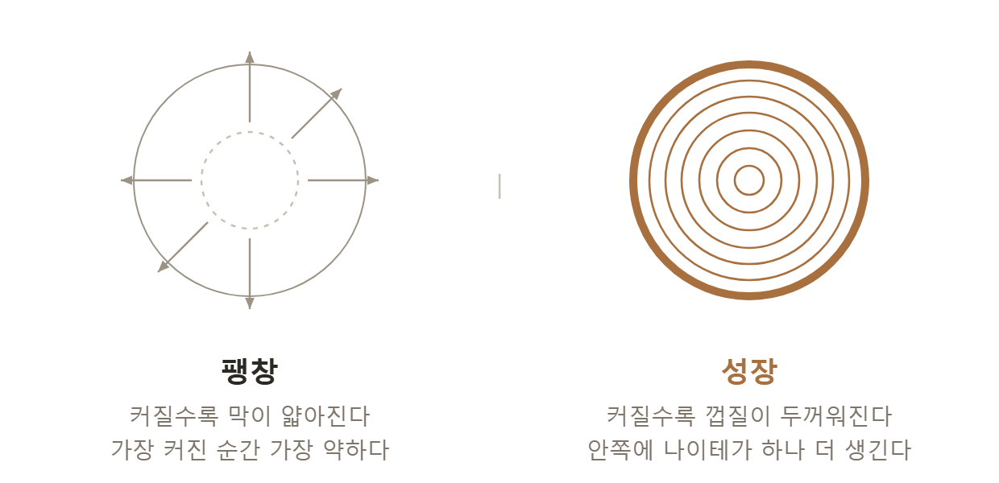

This writing is password protected.
An Age Without Negativity; a Heart Afraid of Wounds
I heard recently about schools in Canada. They no longer announce class rankings. Exams are not a single verdict either; students may sit them several times. The reason was a single one: so as not to wound the child. Korea is gradually moving the same way. We erase the rankings, multiply the chances, and never say that someone did badly.
Ujjujju is the cooing sound Koreans make to soothe a baby. Because we now make that sound at fully grown adults too, I call this age the Age of Coddling. When did it become impossible for us to say painful things to one another?
The Age of Coddling is a gentle age. No one wants to wound anyone carelessly. Criticism grows cautious, and social media overflows with “I love it.” On the surface, no world could be warmer. The philosopher Byung-Chul Han called our age an age with an excess of positivity. If the old illness came from repression and prohibition — from “no” — today’s illness comes from an endless “yes.” The Age of Coddling is precisely that world where only the “yes” remains. The power to say “no,” the words that wound — in short, negativity — has vanished.
And then something strange happens. In this gentle age, people grow weaker instead. They collapse at the smallest criticism and cannot bear even a little pain. Why? The answer is unexpected. It is because the wound has disappeared. As we will see in detail later, living things grow through a measure of wounding. Muscle thickens only when it is finely torn; immunity strengthens only when it meets a germ. A world that has erased the wound entirely is not a safe place but a sterile room, robbed of every chance to grow.
The Age of Coddling is a gentle age and, at the same time, an age afraid of wounds. And it rears a certain kind of person: one who fears being wounded. Afraid to be hurt, he never truly stakes himself. Instead, he swells. Here the first distinction of this book begins. Swelling and growing are entirely different things.
Growing is being filled from within. When a tree grows, it carves one more ring inside itself. Its density rises; it hardens. But swelling is thinning outward. As a balloon grows larger, its rubber skin thins and thins. And at its very fullest, it is weakest. What falls first to the storm in the forest is not the small tree but the great one, grown tall while hollow within.
Growth gains density; expansion loses it.

The psychologist Carl Jung explained this distinction with an ancient image. The social face we present to the world he called the “persona” — the actor’s mask. The mask is not a bad thing. It is indispensable for living. But when a person mistakes that mask for himself and swells himself into it — Jung called this “inflation” — he becomes a shell, large-seeming but empty within. True growth, by contrast, turns not toward the mask (the outside) but toward the Self (the inside). To integrate a scattered self from within and grow solid — the path Jung called, all his life, individuation — that is growing. Swelling is the inflation of the mask; growing is the deepening of the Self.
Then why does a person swell? Not from confidence. Quite the opposite. It is because real failure frightens him. Real failure is giving your all and still falling short — a verdict upon one’s very being: I staked everything, and this was all it came to. Dreading that verdict, a person holds his best in reserve. Psychology calls this self-handicapping. It is the heart of the child who deliberately does not study the night before an exam. Work hard and score low, and the verdict remains, “This is simply my level”; do nothing and score low, and the alibi remains, “I would have done well if I had tried.” A best never given cannot fail. But a best never given cannot succeed either.
The Age of Coddling encourages this escape. Since no one says, “No, that is not good enough,” a person never even gets the chance to strike against his own limit. Nietzsche described “learning to see” as the power not to react instantly to every oncoming stimulus — the power to say no. Where that “no” has vanished, a person dwells safely inside an untested, unlimited possibility. He simply never grows. Interestingly, Scripture has a sentence that names this swelling exactly: “Knowledge puffs up, but love builds up” (1 Corinthians 8:1). Puffing up and building up — the difference between expansion and growth is already there.
There are two kinds of power: the power to do something, and the power to refrain from doing it. With only the first and not the second, we become machines that merely react to every stimulus that comes. We cannot stop, cannot refuse, and therefore cannot grow. The mark of a mature person is not the capacity to do anything but the capacity to leave something undone. And when you think about it, the boundary is exactly where that power lives — the small gap between stimulus and response in which a “no” can be set up, the space of negativity. What the Age of Coddling has erased is precisely this gap, and what this book seeks to recover is precisely this gap.
To confess honestly, I have that fear too. In my Boston years I commuted by bicycle, and there was one climb we called the hill of death. I was grinding my way up it when a white-haired grandmother on a bicycle with a basket on the front swept past me. Flustered and embarrassed, I gave chase. The gap never closed. Down one hill and up another I chased her for twenty minutes, and just as I thought I had her, she turned off down a side street and went another way.
Here I am, a professor in exercise science of all people, and I get overtaken by a grandmother on a bicycle with a basket on the front. My pride was in pieces.— 2011, Facebook
What was that pride, exactly? I chased her for twenty minutes not because I was in a hurry to arrive. I did not want to lose. That grandmother was not competing with me. The only one competing was me. All of us, a little at a time, swell in order not to get hurt.
But the day had another ending. When I reached my appointment I was five minutes early. Chasing her, I had ridden faster than usual without knowing it. The person who embarrassed me had delivered me on time.
Looking back, my life has had people like that. At the time I disliked that person, that situation, so intensely — yet in hindsight, without them I would not be standing where I stand. What wounds my pride and what makes me grow arrive wearing the same face: that is what I learned on that hill. I will return to this story in Chapter Six.
So this book is one that invites back the wound the Age of Coddling has erased — so that gentleness does not erase growth, so that pain may become again a place of growing. That we may grow rather than swell; that we may pass through the wound rather than avoid it. For fear grows small not when it is hidden but when it is faced. Now, let us begin the journey.
Notes for this chapter
Carl Jung, on persona, the Self, and individuation · Berglas & Jones (1978), Journal of Personality and Social Psychology 36(4):405–417 — self-handicapping · Friedrich Nietzsche, Twilight of the Idols (“learning to see”) · Byung-Chul Han, The Burnout Society · 1 Corinthians 8:1